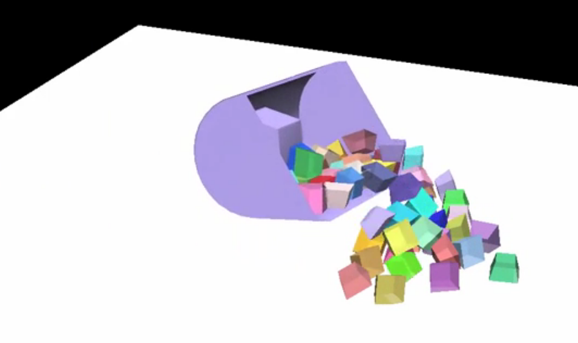

SIMPAR 2016 Proposal, half-day Tutorial: Modeling and simulating mechanical rigid-body systems using Siconos
Vincent Acary and Stephen Sinclair, Inria Chile.
Siconos is a system (C++ framework with Python wrapper) for modeling and numerically simulating nonsmooth dynamical systems. At a mathematical level, it allows to specify models as a set of dynamical systems constrained by interactions based on relations measured on their state vectors. On this is built a variety of higher-level frameworks including systems for mechanical rigid body modeling, electrical circuits, and biological networks. In this tutorial we will demonstrate and explain how to use Siconos for modeling robotics-related mechanical systems, and use them for interaction with large-grain granular materials.
Siconos, created in 2005 for bipedal robot modeling, is a class framework and set of solvers for general modeling and simulation of nonsmooth dynamical systems; that is to say, dynamical systems featuring hard, non-linear constraints such as mechanical contact-friction problems, as well as simulation of nonlinearities in electrical circuits (e.g. diodes) and biological networks (e.g. neural firing), etc. Dynamical systems are formalised as a collection of dynamical system objects which are related in a graph by interactions. Interactions define laws constraining relations between state vectors. In a Siconos simulation step, state vectors are integrated and subsequently formulated into a mathematical programming problem (linear or second order cone complementarity problem, variational inequality, ...) which is then solved by a number of available solvers, the most common being the Gauss-Seidel iterative method for the large scale mechanical systems.
While Siconos can be used through this interface oriented toward the mathematical problem formulation, for common problem domains it is more convenient to use domain-specific interfaces that have been developed on top of this. For mechanics, Siconos provides objects that encapsulate Newton-Euler (maximal coordinates) and Lagrangian (generalized coordinates) formulates of mechanical systems along with 3D friction contact constraint laws that are able to simulate rigid body systems. An abstraction layer finally wraps this in an interface that associates weighted bodies with contact shapes, and dynamically handles interaction lifetimes (contact constraints) based on broadphase collision detection; this can be accessed using C++ or completely controlled via Python. This layer provides a complete rigid body simulator that can be integrated into any software.
Finally, a Python abstraction layer handles specification and serialisation of simulation data into an HDF5-based file format which we use for viewing and further exporting into other data formats, such as for the Visualisation Toolkit (VTK) and Paraview. We also will present current work on integrating this mechanics layer of Siconos as a new physics back-end for the Gazebo robotics simulator.
Siconos’ strength comes from this flexible framework that can be used to introduce new algorithms and formalisms at a variety of abstraction levels. Its design focuses on a strict separation of modeling and numerical simulation aspects, which allows for a particularly modular approach. This tutorial will present Siconos as a simulation API but also expose the audience to how Siconos encodes the mathematical formalisms expressed by Siconos’ kernel layer and numerics solver, and provides hooks via composition and inheritance to test and integrate new algorithms and formalisms.
Furthermore, some unique capabilities of Siconos will be highlighted, such as its implementation of true second-order cone friction for implementing Coulomb friction, and its multiplicity of solvers and integration schemes with various order and structural properties will be discussed. Apart from this presentation of the software, the tutorial will take the audience through a simple mechanical system example (a bouncing ball, then a system of bouncing balls) from its mathematical formulation through to its encoding as a Siconos simulation at various layers of abstraction:
Following this tutorial, audience members should gain familiarity with the problem of nonsmooth dynamical system modeling and its relation to mechanical rigid body simulation, and understand how to tackle and explore such problems using the Siconos framework.
Although this tutorial will be heavily presentation-based, we plan to include a number of video-based and interactive examples from basic (bouncing ball) to complex (robotic system with granular material), which should cover a fair number of application areas of interest to audience members. We also plan to show a variety of ways of using Siconos, from C++ to interactive Python to graphical interaction using Gazebo. We hope that this will stimulate discussion and solicit ideas and problem cases from the audience to discuss. Furthermore, we will provide a means for users to try Siconos during the tutorial session by means of a VM or Docker image, possibly by a web interface (TBD), and finally by installing it locally on their machine if they so choose.
More information about Siconos can be found at its homepage.